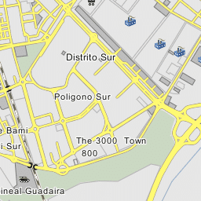

Tiro de Línea-Santa Genoveva es un barrio de la ciudad de Sevilla (España), perteneciente al distrito Sur y situado en su zona centro-norte. Limita al norte con el barrio de Giralda Sur; al este, con el barrio de Felipe II-Los Diez Mandamientos; al sur, con el barrio de Polígono Sur; y al oeste, con los barrios de El Porvenir y Tabladilla-La Estrella.
A mitad del siglo XIX, los terrenos de lo que hoy es el Tiro de Línea eran utilizados para que el ganado pastara durante la feria. El nombre de Tiro de Línea viene de los militares que practicaban allí ejercicios de tiro con cañones. Más tarde, con la Exposición Iberoamericana de 1929, se habilitaron los terrenos de este barrio para construir viviendas para trabajadores. A partir de 1933 se denominó Barriada de la República y en 1958 se renombró Barrio de Nuestra Señora de las Mercedes, nombre que conserva hoy día, aunque es más bien conocido como El Tiro de Línea.